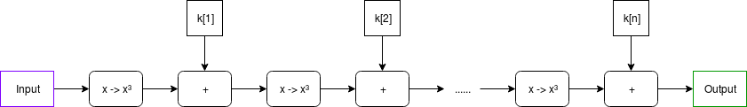
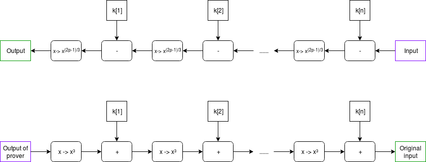
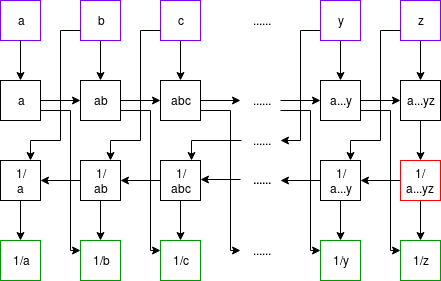
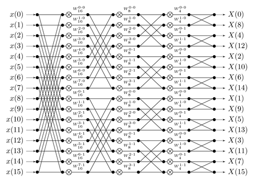

STARKs, Part 3: Into the Weeds
2018 Jul 21
See all posts
STARKs, Part 3: Into the Weeds
Special thanks to Eli ben Sasson for his kind assistance, as usual. Special thanks to Chih-Cheng Liang and Justin Drake for review, and to Ben Fisch for suggesting the reverse MIMC technique for a VDF (paper here)
Trigger warning: math and lots of python
As a followup to Part 1 and Part 2 of this series, this post will cover what it looks like to actually implement a STARK, complete with an implementation in python. STARKs ("Scalable Transparent ARgument of Knowledge" are a technique for creating a proof that \(f(x)=y\) where \(f\) may potentially take a very long time to calculate, but where the proof can be verified very quickly. A STARK is "doubly scalable": for a computation with \(t\) steps, it takes roughly \(O(t \cdot \log{t})\) steps to produce a proof, which is likely optimal, and it takes ~\(O(\log^2{t})\) steps to verify, which for even moderately large values of \(t\) is much faster than the original computation. STARKs can also have a privacy-preserving "zero knowledge" property, though the use case we will apply them to here, making verifiable delay functions, does not require this property, so we do not need to worry about it.
First, some disclaimers:
- This code has not been thoroughly audited; soundness in production use cases is not guaranteed
- This code is very suboptimal (it's written in Python, what did you expect)
- STARKs "in real life" (ie. as implemented in Eli and co's production implementations) tend to use binary fields and not prime fields for application-specific efficiency reasons; however, they do stress in their writings the prime field-based approach to STARKs described here is legitimate and can be used
- There is no "one true way" to do a STARK. It's a broad category of cryptographic and mathematical constructs, with different setups optimal for different applications and constant ongoing research to reduce prover and verifier complexity and improve soundness.
- This article absolutely expects you to know how modular arithmetic and prime fields work, and be comfortable with the concepts of polynomials, interpolation and evaluation. If you don't, go back to Part 2, and also this earlier post on quadratic arithmetic programs
Now, let's get to it.
MIMC
Here is the function we'll be doing a STARK of:
def mimc(inp, steps, round_constants):
start_time = time.time()
for i in range(steps-1):
inp = (inp**3 + round_constants[i % len(round_constants)]) % modulus
print("MIMC computed in %.4f sec" % (time.time() - start_time))
return inp
We choose MIMC (see paper) as the example because it is both (i) simple to understand and (ii) interesting enough to be useful in real life. The function can be viewed visually as follows:

Note: in many discussions of MIMC, you will typically see XOR used instead of +; this is because MIMC is typically done over binary fields, where addition is XOR; here we are doing it over prime fields.
In our example, the round constants will be a relatively small list (eg. 64 items) that gets cycled through over and over again (that is, after k[64] it loops back to using k[1]).
MIMC with a very large number of rounds, as we're doing here, is useful as a verifiable delay function - a function which is difficult to compute, and particularly non-parallelizable to compute, but relatively easy to verify. MIMC by itself achieves this property to some extent because MIMC can be computed "backward" (recovering the "input" from its corresponding "output"), but computing it backward takes about 100 times longer to compute than the forward direction (and neither direction can be significantly sped up by parallelization). So you can think of computing the function in the backward direction as being the act of "computing" the non-parallelizable proof of work, and computing the function in the forward direction as being the process of "verifying" it.

\(x \rightarrow x^{(2p-1)/3}\) gives the inverse of \(x \rightarrow x^3\); this is true because of Fermat's Little Theorem, a theorem that despite its supposed littleness is arguably much more important to mathematics than Fermat's more famous "Last Theorem".
What we will try to achieve here is to make verification much more efficient by using a STARK - instead of the verifier having to run MIMC in the forward direction themselves, the prover, after completing the computation in the "backward direction", would compute a STARK of the computation in the "forward direction", and the verifier would simply verify the STARK. The hope is that the overhead of computing a STARK can be less than the difference in speed running MIMC forwards relative to backwards, so a prover's time would still be dominated by the initial "backward" computation, and not the (highly parallelizable) STARK computation. Verification of a STARK can be relatively fast (in our python implementation, ~0.05-0.3 seconds), no matter how long the original computation is.
All calculations are done modulo \(2^{256} - 351 \cdot 2^{32} + 1\); we are using this prime field modulus because it is the largest prime below \(2^{256}\) whose multiplicative group contains an order \(2^{32}\) subgroup (that is, there's a number \(g\) such that successive powers of \(g\) modulo this prime loop around back to \(1\) after exactly \(2^{32}\) cycles), and which is of the form \(6k+5\). The first property is necessary to make sure that our efficient versions of the FFT and FRI algorithms can work, and the second ensures that MIMC actually can be computed "backwards" (see the use of \(x \rightarrow x^{(2p-1)/3}\) above).
Prime field operations
We start off by building a convenience class that does prime field operations, as well as operations with polynomials over prime fields. The code is here. First some trivial bits:
class PrimeField():
def __init__(self, modulus):
# Quick primality test
assert pow(2, modulus, modulus) == 2
self.modulus = modulus
def add(self, x, y):
return (x+y) % self.modulus
def sub(self, x, y):
return (x-y) % self.modulus
def mul(self, x, y):
return (x*y) % self.modulus
And the Extended Euclidean Algorithm for computing modular inverses (the equivalent of computing \(\frac{1}{x}\) in a prime field):
# Modular inverse using the extended Euclidean algorithm
def inv(self, a):
if a == 0:
return 0
lm, hm = 1, 0
low, high = a % self.modulus, self.modulus
while low > 1:
r = high//low
nm, new = hm-lm*r, high-low*r
lm, low, hm, high = nm, new, lm, low
return lm % self.modulus
The above algorithm is relatively expensive; fortunately, for the special case where we need to do many modular inverses, there's a simple mathematical trick that allows us to compute many inverses, called Montgomery batch inversion:

Using Montgomery batch inversion to compute modular inverses. Inputs purple, outputs green, multiplication gates black; the red square is the only modular inversion.
The code below implements this algorithm, with some slightly ugly special case logic so that if there are zeroes in the set of what we are inverting, it sets their inverse to 0 and moves along.
def multi_inv(self, values):
partials = [1]
for i in range(len(values)):
partials.append(self.mul(partials[-1], values[i] or 1))
inv = self.inv(partials[-1])
outputs = [0] * len(values)
for i in range(len(values), 0, -1):
outputs[i-1] = self.mul(partials[i-1], inv) if values[i-1] else 0
inv = self.mul(inv, values[i-1] or 1)
return outputs
This batch inverse algorithm will prove important later on, when we start dealing with dividing sets of evaluations of polynomials.
Now we move on to some polynomial operations. We treat a polynomial as an array, where element \(i\) is the \(i\)th degree term (eg. \(x^{3} + 2x + 1\) becomes [1, 2, 0, 1]). Here's the operation of evaluating a polynomial at one point:
# Evaluate a polynomial at a point
def eval_poly_at(self, p, x):
y = 0
power_of_x = 1
for i, p_coeff in enumerate(p):
y += power_of_x * p_coeff
power_of_x = (power_of_x * x) % self.modulus
return y % self.modulus
Challenge
What is the output of f.eval_poly_at([4, 5, 6], 2) if the modulus is 31?
Mouseover below for answer
\(6 \cdot 2^{2} + 5 \cdot 2 + 4 = 38, 38 \bmod 31 = 7\).
There is also code for adding, subtracting, multiplying and dividing polynomials; this is textbook long addition/subtraction/multiplication/division. The one non-trivial thing is Lagrange interpolation, which takes as input a set of x and y coordinates, and returns the minimal polynomial that passes through all of those points (you can think of it as being the inverse of polynomial evaluation):
# Build a polynomial that returns 0 at all specified xs
def zpoly(self, xs):
root = [1]
for x in xs:
root.insert(0, 0)
for j in range(len(root)-1):
root[j] -= root[j+1] * x
return [x % self.modulus for x in root]
def lagrange_interp(self, xs, ys):
# Generate master numerator polynomial, eg. (x - x1) * (x - x2) * ... * (x - xn)
root = self.zpoly(xs)
# Generate per-value numerator polynomials, eg. for x=x2,
# (x - x1) * (x - x3) * ... * (x - xn), by dividing the master
# polynomial back by each x coordinate
nums = [self.div_polys(root, [-x, 1]) for x in xs]
# Generate denominators by evaluating numerator polys at each x
denoms = [self.eval_poly_at(nums[i], xs[i]) for i in range(len(xs))]
invdenoms = self.multi_inv(denoms)
# Generate output polynomial, which is the sum of the per-value numerator
# polynomials rescaled to have the right y values
b = [0 for y in ys]
for i in range(len(xs)):
yslice = self.mul(ys[i], invdenoms[i])
for j in range(len(ys)):
if nums[i][j] and ys[i]:
b[j] += nums[i][j] * yslice
return [x % self.modulus for x in b]
See the "M of N" section of this article for a description of the math. Note that we also have special-case methods lagrange_interp_4 and lagrange_interp_2 to speed up the very frequent operations of Lagrange interpolation of degree \(< 2\) and degree \(< 4\) polynomials.
If you read the above algorithms carefully, you might notice that Lagrange interpolation and multi-point evaluation (that is, evaluating a degree \(< N\) polynomial at \(N\) points) both take quadratic time to execute, so for example doing a Lagrange interpolation of one thousand points takes a few million steps to execute, and a Lagrange interpolation of one million points takes a few trillion. This is an unacceptably high level of inefficiency, so we will use a more efficient algorithm, the Fast Fourier Transform.
The FFT only takes \(O(n \cdot log(n))\) time (ie. ~10,000 steps for 1,000 points, ~20 million steps for 1 million points), though it is more restricted in scope; the x coordinates must be a complete set of roots of unity of some order \(N = 2^{k}\). That is, if there are \(N\) points, the x coordinates must be successive powers \(1, p, p^{2}, p^{3}\)... of some \(p\) where \(p^{N} = 1\). The algorithm can, surprisingly enough, be used for multi-point evaluation or interpolation, with one small parameter tweak.
Challenge Find a 16th root of unity mod 337 that is not an 8th root of unity.
Mouseover below for answer
59, 146, 30, 297, 278, 191, 307, 40
You could have gotten this list by doing something like [print(x) for x in range(337) if pow(x, 16, 337) == 1 and pow(x, 8, 337) != 1], though there is a smarter way that works for much larger moduluses: first, identify a single primitive root mod 337 (that is, not a perfect square), by looking for a value x such that pow(x, 336 // 2, 337) != 1 (these are easy to find; one answer is 5), and then taking the (336 / 16)'th power of it.
Here's the algorithm (in a slightly simplified form; see code here for something slightly more optimized):
def fft(vals, modulus, root_of_unity):
if len(vals) == 1:
return vals
L = fft(vals[::2], modulus, pow(root_of_unity, 2, modulus))
R = fft(vals[1::2], modulus, pow(root_of_unity, 2, modulus))
o = [0 for i in vals]
for i, (x, y) in enumerate(zip(L, R)):
y_times_root = y*pow(root_of_unity, i, modulus)
o[i] = (x+y_times_root) % modulus
o[i+len(L)] = (x-y_times_root) % modulus
return o
def inv_fft(vals, modulus, root_of_unity):
f = PrimeField(modulus)
# Inverse FFT
invlen = f.inv(len(vals))
return [(x*invlen) % modulus for x in
fft(vals, modulus, f.inv(root_of_unity))]
You can try running it on a few inputs yourself and check that it gives results that, when you use eval_poly_at on them, give you the answers you expect to get. For example:
>>> fft.fft([3,1,4,1,5,9,2,6], 337, 85, inv=True)
[46, 169, 29, 149, 126, 262, 140, 93]
>>> f = poly_utils.PrimeField(337)
>>> [f.eval_poly_at([46, 169, 29, 149, 126, 262, 140, 93], f.exp(85, i)) for i in range(8)]
[3, 1, 4, 1, 5, 9, 2, 6]
A Fourier transform takes as input [x[0] .... x[n-1]], and its goal is to output x[0] + x[1] + ... + x[n-1] as the first element, x[0] + x[1] * 2 + ... + x[n-1] * w**(n-1) as the second element, etc etc; a fast Fourier transform accomplishes this by splitting the data in half, doing an FFT on both halves, and then gluing the result back together.

A diagram of how information flows through the FFT computation. Notice how the FFT consists of a "gluing" step followed by two copies of the FFT on two halves of the data, and so on recursively until you're down to one element.
I recommend this for more intuition on how or why the FFT works and polynomial math in general, and this thread for some more specifics on DFT vs FFT, though be warned that most literature on Fourier transforms talks about Fourier transforms over real and complex numbers, not prime fields. If you find this too hard and don't want to understand it, just treat it as weird spooky voodoo that just works because you ran the code a few times and verified that it works, and you'll be fine too.
Thank Goodness It's FRI-day (that's "Fast Reed-Solomon Interactive Oracle Proofs of Proximity")
Reminder: now may be a good time to review and re-read Part 2
Now, we'll get into the code for making a low-degree proof. To review, a low-degree proof is a (probabilistic) proof that at least some high percentage (eg. 80%) of a given set of values represent the evaluations of some specific polynomial whose degree is much lower than the number of values given. Intuitively, just think of it as a proof that "some Merkle root that we claim represents a polynomial actually does represent a polynomial, possibly with a few errors". As input, we have:
- A set of values that we claim are the evaluation of a low-degree polynomial
- A root of unity; the x coordinates at which the polynomial is evaluated are successive powers of this root of unity
- A value \(N\) such that we are proving the degree of the polynomial is strictly less than \(N\)
- The modulus
Our approach is a recursive one, with two cases. First, if the degree is low enough, we just provide the entire list of values as a proof; this is the "base case". Verification of the base case is trivial: do an FFT or Lagrange interpolation or whatever else to interpolate the polynomial representing those values, and verify that its degree is \(< N\). Otherwise, if the degree is higher than some set minimum, we do the vertical-and-diagonal trick described at the bottom of Part 2.
We start off by putting the values into a Merkle tree and using the Merkle root to select a pseudo-random x coordinate (special_x). We then calculate the "column":
# Calculate the set of x coordinates
xs = get_power_cycle(root_of_unity, modulus)
column = []
for i in range(len(xs)//4):
x_poly = f.lagrange_interp_4(
[xs[i+len(xs)*j//4] for j in range(4)],
[values[i+len(values)*j//4] for j in range(4)],
)
column.append(f.eval_poly_at(x_poly, special_x))
This packs a lot into a few lines of code. The broad idea is to re-interpret the polynomial \(P(x)\) as a polynomial \(Q(x, y)\), where \(P(x) = Q(x, x^4)\). If \(P\) has degree \(< N\), then \(P'(y) = Q(special\_x, y)\) will have degree \(< \frac{N}{4}\). Since we don't want to take the effort to actually compute \(Q\) in coefficient form (that would take a still-relatively-nasty-and-expensive FFT!), we instead use another trick. For any given value of \(x^{4}\), there are 4 corresponding values of \(x\): \(x\), \(modulus - x\), and \(x\) multiplied by the two modular square roots of \(-1\). So we already have four values of \(Q(?, x^4)\), which we can use to interpolate the polynomial \(R(x) = Q(x, x^4)\), and from there calculate \(R(special\_x) = Q(special\_x, x^4) = P'(x^4)\). There are \(\frac{N}{4}\) possible values of \(x^{4}\), and this lets us easily calculate all of them.

A diagram from part 2; it helps to keep this in mind when understanding what's going on here
Our proof consists of some number (eg. 40) of random queries from the list of values of \(x^{4}\) (using the Merkle root of the column as a seed), and for each query we provide Merkle branches of the five values of \(Q(?, x^4)\):
m2 = merkelize(column)
# Pseudo-randomly select y indices to sample
# (m2[1] is the Merkle root of the column)
ys = get_pseudorandom_indices(m2[1], len(column), 40)
# Compute the Merkle branches for the values in the polynomial and the column
branches = []
for y in ys:
branches.append([mk_branch(m2, y)] +
[mk_branch(m, y + (len(xs) // 4) * j) for j in range(4)])
The verifier's job will be to verify that these five values actually do lie on the same degree \(< 4\) polynomial. From there, we recurse and do an FRI on the column, verifying that the column actually does have degree \(< \frac{N}{4}\). That really is all there is to FRI.
As a challenge exercise, you could try creating low-degree proofs of polynomial evaluations that have errors in them, and see how many errors you can get away passing the verifier with (hint, you'll need to modify the prove_low_degree function; with the default prover, even one error will balloon up and cause verification to fail).
The STARK
Reminder: now may be a good time to review and re-read Part 1
Now, we get to the actual meat that puts all of these pieces together: def mk_mimc_proof(inp, steps, round_constants) (code here), which generates a proof of the execution result of running the MIMC function with the given input for some number of steps. First, some asserts:
assert steps <= 2**32 // extension_factor
assert is_a_power_of_2(steps) and is_a_power_of_2(len(round_constants))
assert len(round_constants) < steps
The extension factor is the extent to which we will be "stretching" the computational trace (the set of "intermediate values" of executing the MIMC function). We need the step count multiplied by the extension factor to be at most \(2^{32}\), because we don't have roots of unity of order \(2^{k}\) for \(k > 32\).
Our first computation will be to generate the computational trace; that is, all of the intermediate values of the computation, from the input going all the way to the output.
# Generate the computational trace
computational_trace = [inp]
for i in range(steps-1):
computational_trace.append((computational_trace[-1]**3 + round_constants[i % len(round_constants)]) % modulus)
output = computational_trace[-1]
We then convert the computation trace into a polynomial, "laying down" successive values in the trace on successive powers of a root of unity \(g\) where \(g^{steps}\) = 1, and we then evaluate the polynomial in a larger set, of successive powers of a root of unity \(g_2\) where \((g_2)^{steps \cdot 8} = 1\) (note that \((g_2)^{8} = g\)).
computational_trace_polynomial = inv_fft(computational_trace, modulus, subroot)
p_evaluations = fft(computational_trace_polynomial, modulus, root_of_unity)
Black: powers of \(g_1\). Purple: powers of \(g_2\). Orange: 1. You can look at successive roots of unity as being arranged in a circle in this way. We are "laying" the computational trace along powers of \(g_1\), and then extending it compute the values of the same polynomial at the intermediate values (ie. the powers of \(g_2\)).
We can convert the round constants of MIMC into a polynomial. Because these round constants loop around very frequently (in our tests, every 64 steps), it turns out that they form a degree-64 polynomial, and we can fairly easily compute its expression, and its extension:
skips2 = steps // len(round_constants)
constants_mini_polynomial = fft(round_constants, modulus, f.exp(subroot, skips2), inv=True)
constants_polynomial = [0 if i % skips2 else constants_mini_polynomial[i//skips2] for i in range(steps)]
constants_mini_extension = fft(constants_mini_polynomial, modulus, f.exp(root_of_unity, skips2))
Suppose there are 8192 steps of execution and 64 round constants. Here is what we are doing: we are doing an FFT to compute the round constants as a function of \((g_1)^{128}\). We then add zeroes in between the constants to make it a function of \(g_1\) itself. Because \((g_1)^{128}\) loops around every 64 steps, we know this function of \(g_1\) will as well. We only compute 512 steps of the extension, because we know that the extension repeats after 512 steps as well.
We now, as in the Fibonacci example in Part 1, calculate \(C(P(x))\), except this time it's \(C(P(x), P(g_1 \cdot x), K(x))\):
# Create the composed polynomial such that
# C(P(x), P(g1*x), K(x)) = P(g1*x) - P(x)**3 - K(x)
c_of_p_evaluations = [(p_evaluations[(i+extension_factor)%precision] -
f.exp(p_evaluations[i], 3) -
constants_mini_extension[i % len(constants_mini_extension)])
% modulus for i in range(precision)]
print('Computed C(P, K) polynomial')
Note that here we are no longer working with polynomials in coefficient form; we are working with the polynomials in terms of their evaluations at successive powers of the higher-order root of unity.
c_of_p is intended to be \(Q(x) = C(P(x), P(g_1 \cdot x), K(x)) = P(g_1 \cdot x) - P(x)^3 - K(x)\); the goal is that for every \(x\) that we are laying the computational trace along (except for the last step, as there's no step "after" the last step), the next value in the trace is equal to the previous value in the trace cubed, plus the round constant. Unlike the Fibonacci example in Part 1, where if one computational step was at coordinate \(k\), the next step is at coordinate \(k+1\), here we are laying down the computational trace along successive powers of the lower-order root of unity \(g_1\), so if one computational step is located at \(x = (g_1)^i\), the "next" step is located at \((g_1)^{i+1}\) = \((g_1)^i \cdot g_1 = x \cdot g_1\). Hence, for every power of the lower-order root of unity \(g_1\) (except the last), we want it to be the case that \(P(x\cdot g_1) = P(x)^3 + K(x)\), or \(P(x\cdot g_1) - P(x)^3 - K(x) = Q(x) = 0\). Thus, \(Q(x)\) will be equal to zero at all successive powers of the lower-order root of unity \(g\) (except the last).
There is an algebraic theorem that proves that if \(Q(x)\) is equal to zero at all of these x coordinates, then it is a multiple of the minimal polynomial that is equal to zero at all of these x coordinates: \(Z(x) = (x - x_1) \cdot (x - x_2) \cdot ... \cdot (x - x_n)\). Since proving that \(Q(x)\) is equal to zero at every single coordinate we want to check is too hard (as verifying such a proof would take longer than just running the original computation!), instead we use an indirect approach to (probabilistically) prove that \(Q(x)\) is a multiple of \(Z(x)\). And how do we do that? By providing the quotient \(D(x) = \frac{Q(x)}{Z(x)}\) and using FRI to prove that it's an actual polynomial and not a fraction, of course!
We chose the particular arrangement of lower and higher order roots of unity (rather than, say, laying the computational trace along the first few powers of the higher order root of unity) because it turns out that computing \(Z(x)\) (the polynomial that evaluates to zero at all points along the computational trace except the last), and dividing by \(Z(x)\) is trivial there: the expression of \(Z\) is a fraction of two terms.
# Compute D(x) = Q(x) / Z(x)
# Z(x) = (x^steps - 1) / (x - x_atlast_step)
z_num_evaluations = [xs[(i * steps) % precision] - 1 for i in range(precision)]
z_num_inv = f.multi_inv(z_num_evaluations)
z_den_evaluations = [xs[i] - last_step_position for i in range(precision)]
d_evaluations = [cp * zd * zni % modulus for cp, zd, zni in zip(c_of_p_evaluations, z_den_evaluations, z_num_inv)]
print('Computed D polynomial')
Notice that we compute the numerator and denominator of \(Z\) directly in "evaluation form", and then use the batch modular inversion to turn dividing by \(Z\) into a multiplication (\(\cdot z_d \cdot z_ni\)), and then pointwise multiply the evaluations of \(Q(x)\) by these inverses of \(Z(x)\). Note that at the powers of the lower-order root of unity except the last (ie. along the portion of the low-degree extension that is part of the original computational trace), \(Z(x) = 0\), so this computation involving its inverse will break. This is unfortunate, though we will plug the hole by simply modifying the random checks and FRI algorithm to not sample at those points, so the fact that we calculated them wrong will never matter.
Because \(Z(x)\) can be expressed so compactly, we get another benefit: the verifier can compute \(Z(x)\) for any specific \(x\) extremely quickly, without needing any precomputation. It's okay for the prover to have to deal with polynomials whose size equals the number of steps, but we don't want to ask the verifier to do the same, as we want verification to be succinct (ie. ultra-fast, with proofs as small as possible).
Probabilistically checking \(D(x) \cdot Z(x) = Q(x)\) at a few randomly selected points allows us to verify the transition constraints - that each computational step is a valid consequence of the previous step. But we also want to verify the boundary constraints - that the input and the output of the computation is what the prover says they are. Just asking the prover to provide evaluations of \(P(1)\), \(D(1)\), \(P(last\_step)\) and \(D(last\_step)\) (where \(last\_step\) (or \(g^{steps-1}\)) is the coordinate corresponding to the last step in the computation) is too fragile; there's no proof that those values are on the same polynomial as the rest of the data. So instead we use a similar kind of polynomial division trick:
# Compute interpolant of ((1, input), (x_atlast_step, output))
interpolant = f.lagrange_interp_2([1, last_step_position], [inp, output])
i_evaluations = [f.eval_poly_at(interpolant, x) for x in xs]
zeropoly2 = f.mul_polys([-1, 1], [-last_step_position, 1])
inv_z2_evaluations = f.multi_inv([f.eval_poly_at(quotient, x) for x in xs])
# B = (P - I) / Z2
b_evaluations = [((p - i) * invq) % modulus for p, i, invq in zip(p_evaluations, i_evaluations, inv_z2_evaluations)]
print('Computed B polynomial')
The argument is as follows. The prover wants to prove \(P(1) = input\) and \(P(last\_step) = output\). If we take \(I(x)\) as the interpolant - the line that crosses the two points \((1, input)\) and \((last\_step, output)\), then \(P(x) - I(x)\) would be equal to zero at those two points. Thus, it suffices to prove that \(P(x) - I(x)\) is a multiple of \((x - 1) \cdot (x - last\_step)\), and we do that by... providing the quotient!


Purple: computational trace polynomial (P). Green: interpolant (I) (notice how the interpolant is constructed to equal the input (which should be the first step of the computational trace) at x=1 and the output (which should be the last step of the computational trace) at \(x=g^{steps-1}\). Red: \(P - I\). Yellow: the minimal polynomial that equals \(0\) at \(x=1\) and \(x=g^{steps-1}\) (that is, \(Z_2\)). Pink: \(\frac{P - I}{Z_2}\).
Challenge Suppose you wanted to also prove that the value in the computational trace after the 703rd computational step is equal to 8018284612598740. How would you modify the above algorithm to do that?
Mouseover below for answer
Set \(I(x)\) to be the interpolant of \((1, input), (g^{703}, 8018284612598740), (last\_step, output)\), and make a proof by providing the quotient \(B(x) = \frac{P(x) - I(x)}{(x - 1) \cdot (x - g^{703}) \cdot (x - last\_step)}\)
Now, we commit to the Merkle root of \(P\), \(D\) and \(B\) combined together.
# Compute their Merkle roots
mtree = merkelize([pval.to_bytes(32, 'big') +
dval.to_bytes(32, 'big') +
bval.to_bytes(32, 'big') for
pval, dval, bval in zip(p_evaluations, d_evaluations, b_evaluations)])
print('Computed hash root')
Now, we need to prove that \(P\), \(D\) and \(B\) are all actually polynomials, and of the right max-degree. But FRI proofs are big and expensive, and we don't want to have three FRI proofs. So instead, we compute a pseudorandom linear combination of \(P\), \(D\) and \(B\) (using the Merkle root of \(P\), \(D\) and \(B\) as a seed), and do an FRI proof on that:
k1 = int.from_bytes(blake(mtree[1] + b'\x01'), 'big')
k2 = int.from_bytes(blake(mtree[1] + b'\x02'), 'big')
k3 = int.from_bytes(blake(mtree[1] + b'\x03'), 'big')
k4 = int.from_bytes(blake(mtree[1] + b'\x04'), 'big')
# Compute the linear combination. We don't even bother calculating it
# in coefficient form; we just compute the evaluations
root_of_unity_to_the_steps = f.exp(root_of_unity, steps)
powers = [1]
for i in range(1, precision):
powers.append(powers[-1] * root_of_unity_to_the_steps % modulus)
l_evaluations = [(d_evaluations[i] +
p_evaluations[i] * k1 + p_evaluations[i] * k2 * powers[i] +
b_evaluations[i] * k3 + b_evaluations[i] * powers[i] * k4) % modulus
for i in range(precision)]
Unless all three of the polynomials have the right low degree, it's almost impossible that a randomly selected linear combination of them will (you have to get extremely lucky for the terms to cancel), so this is sufficient.
We want to prove that the degree of D is less than \(2 \cdot steps\), and that of \(P\) and \(B\) are less than \(steps\), so we actually make a random linear combination of \(P\), \(P \cdot x^{steps}\), \(B\), \(B^{steps}\) and \(D\), and check that the degree of this combination is less than \(2 \cdot steps\).
Now, we do some spot checks of all of the polynomials. We generate some random indices, and provide the Merkle branches of the polynomial evaluated at those indices:
# Do some spot checks of the Merkle tree at pseudo-random coordinates, excluding
# multiples of `extension_factor`
branches = []
samples = spot_check_security_factor
positions = get_pseudorandom_indices(l_mtree[1], precision, samples,
exclude_multiples_of=extension_factor)
for pos in positions:
branches.append(mk_branch(mtree, pos))
branches.append(mk_branch(mtree, (pos + skips) % precision))
branches.append(mk_branch(l_mtree, pos))
print('Computed %d spot checks' % samples)
The get_pseudorandom_indices function returns some random indices in the range [0...precision-1], and the exclude_multiples_of parameter tells it to not give values that are multiples of the given parameter (here, extension_factor). This ensures that we do not sample along the original computational trace, where we are likely to get wrong answers.
The proof (~250-500 kilobytes altogether) consists of a set of Merkle roots, the spot-checked branches, and a low-degree proof of the random linear combination:
o = [mtree[1],
l_mtree[1],
branches,
prove_low_degree(l_evaluations, root_of_unity, steps * 2, modulus, exclude_multiples_of=extension_factor)]
The largest parts of the proof in practice are the Merkle branches, and the FRI proof, which consists of even more branches. And here's the "meat" of the verifier:
for i, pos in enumerate(positions):
x = f.exp(G2, pos)
x_to_the_steps = f.exp(x, steps)
mbranch1 = verify_branch(m_root, pos, branches[i*3])
mbranch2 = verify_branch(m_root, (pos+skips)%precision, branches[i*3+1])
l_of_x = verify_branch(l_root, pos, branches[i*3 + 2], output_as_int=True)
p_of_x = int.from_bytes(mbranch1[:32], 'big')
p_of_g1x = int.from_bytes(mbranch2[:32], 'big')
d_of_x = int.from_bytes(mbranch1[32:64], 'big')
b_of_x = int.from_bytes(mbranch1[64:], 'big')
zvalue = f.div(f.exp(x, steps) - 1,
x - last_step_position)
k_of_x = f.eval_poly_at(constants_mini_polynomial, f.exp(x, skips2))
# Check transition constraints Q(x) = Z(x) * D(x)
assert (p_of_g1x - p_of_x ** 3 - k_of_x - zvalue * d_of_x) % modulus == 0
# Check boundary constraints B(x) * Z2(x) + I(x) = P(x)
interpolant = f.lagrange_interp_2([1, last_step_position], [inp, output])
zeropoly2 = f.mul_polys([-1, 1], [-last_step_position, 1])
assert (p_of_x - b_of_x * f.eval_poly_at(zeropoly2, x) -
f.eval_poly_at(interpolant, x)) % modulus == 0
# Check correctness of the linear combination
assert (l_of_x - d_of_x -
k1 * p_of_x - k2 * p_of_x * x_to_the_steps -
k3 * b_of_x - k4 * b_of_x * x_to_the_steps) % modulus == 0
At every one of the positions that the prover provides a Merkle proof for, the verifier checks the Merkle proof, and checks that \(C(P(x), P(g_1 \cdot x), K(x)) = Z(x) \cdot D(x)\) and \(B(x) \cdot Z_2(x) + I(x) = P(x)\) (reminder: for \(x\) that are not along the original computation trace, \(Z(x)\) will not be zero, and so \(C(P(x), P(g_1 \cdot x), K(x))\) likely will not evaluate to zero). The verifier also checks that the linear combination is correct, and calls verify_low_degree_proof(l_root, root_of_unity, fri_proof, steps * 2, modulus, exclude_multiples_of=extension_factor) to verify the FRI proof. And we're done!
Well, not really; soundness analysis to prove how many spot-checks for the cross-polynomial checking and for the FRI are necessary is really tricky. But that's all there is to the code, at least if you don't care about making even crazier optimizations. When I run the code above, we get a STARK proving "overhead" of about 300-400x (eg. a MIMC computation that takes 0.2 seconds to calculate takes 60 second to prove), suggesting that with a 4-core machine computing the STARK of the MIMC computation in the forward direction could actually be faster than computing MIMC in the backward direction. That said, these are both relatively inefficient implementations in python, and the proving to running time ratio for properly optimized implementations may be different. Also, it's worth pointing out that the STARK proving overhead for MIMC is remarkably low, because MIMC is almost perfectly "arithmetizable" - it's mathematical form is very simple. For "average" computations, which contain less arithmetically clean operations (eg. checking if a number is greater or less than another number), the overhead is likely much higher, possibly around 10000-50000x.
STARKs, Part 3: Into the Weeds
2018 Jul 21 See all postsSpecial thanks to Eli ben Sasson for his kind assistance, as usual. Special thanks to Chih-Cheng Liang and Justin Drake for review, and to Ben Fisch for suggesting the reverse MIMC technique for a VDF (paper here)
Trigger warning: math and lots of python
As a followup to Part 1 and Part 2 of this series, this post will cover what it looks like to actually implement a STARK, complete with an implementation in python. STARKs ("Scalable Transparent ARgument of Knowledge" are a technique for creating a proof that \(f(x)=y\) where \(f\) may potentially take a very long time to calculate, but where the proof can be verified very quickly. A STARK is "doubly scalable": for a computation with \(t\) steps, it takes roughly \(O(t \cdot \log{t})\) steps to produce a proof, which is likely optimal, and it takes ~\(O(\log^2{t})\) steps to verify, which for even moderately large values of \(t\) is much faster than the original computation. STARKs can also have a privacy-preserving "zero knowledge" property, though the use case we will apply them to here, making verifiable delay functions, does not require this property, so we do not need to worry about it.
First, some disclaimers:
Now, let's get to it.
MIMC
Here is the function we'll be doing a STARK of:
We choose MIMC (see paper) as the example because it is both (i) simple to understand and (ii) interesting enough to be useful in real life. The function can be viewed visually as follows:
Note: in many discussions of MIMC, you will typically see XOR used instead of +; this is because MIMC is typically done over binary fields, where addition is XOR; here we are doing it over prime fields.
In our example, the round constants will be a relatively small list (eg. 64 items) that gets cycled through over and over again (that is, after
k[64]it loops back to usingk[1]).MIMC with a very large number of rounds, as we're doing here, is useful as a verifiable delay function - a function which is difficult to compute, and particularly non-parallelizable to compute, but relatively easy to verify. MIMC by itself achieves this property to some extent because MIMC can be computed "backward" (recovering the "input" from its corresponding "output"), but computing it backward takes about 100 times longer to compute than the forward direction (and neither direction can be significantly sped up by parallelization). So you can think of computing the function in the backward direction as being the act of "computing" the non-parallelizable proof of work, and computing the function in the forward direction as being the process of "verifying" it.
\(x \rightarrow x^{(2p-1)/3}\) gives the inverse of \(x \rightarrow x^3\); this is true because of Fermat's Little Theorem, a theorem that despite its supposed littleness is arguably much more important to mathematics than Fermat's more famous "Last Theorem".
What we will try to achieve here is to make verification much more efficient by using a STARK - instead of the verifier having to run MIMC in the forward direction themselves, the prover, after completing the computation in the "backward direction", would compute a STARK of the computation in the "forward direction", and the verifier would simply verify the STARK. The hope is that the overhead of computing a STARK can be less than the difference in speed running MIMC forwards relative to backwards, so a prover's time would still be dominated by the initial "backward" computation, and not the (highly parallelizable) STARK computation. Verification of a STARK can be relatively fast (in our python implementation, ~0.05-0.3 seconds), no matter how long the original computation is.
All calculations are done modulo \(2^{256} - 351 \cdot 2^{32} + 1\); we are using this prime field modulus because it is the largest prime below \(2^{256}\) whose multiplicative group contains an order \(2^{32}\) subgroup (that is, there's a number \(g\) such that successive powers of \(g\) modulo this prime loop around back to \(1\) after exactly \(2^{32}\) cycles), and which is of the form \(6k+5\). The first property is necessary to make sure that our efficient versions of the FFT and FRI algorithms can work, and the second ensures that MIMC actually can be computed "backwards" (see the use of \(x \rightarrow x^{(2p-1)/3}\) above).
Prime field operations
We start off by building a convenience class that does prime field operations, as well as operations with polynomials over prime fields. The code is here. First some trivial bits:
And the Extended Euclidean Algorithm for computing modular inverses (the equivalent of computing \(\frac{1}{x}\) in a prime field):
The above algorithm is relatively expensive; fortunately, for the special case where we need to do many modular inverses, there's a simple mathematical trick that allows us to compute many inverses, called Montgomery batch inversion:
Using Montgomery batch inversion to compute modular inverses. Inputs purple, outputs green, multiplication gates black; the red square is the only modular inversion.
The code below implements this algorithm, with some slightly ugly special case logic so that if there are zeroes in the set of what we are inverting, it sets their inverse to 0 and moves along.
This batch inverse algorithm will prove important later on, when we start dealing with dividing sets of evaluations of polynomials.
Now we move on to some polynomial operations. We treat a polynomial as an array, where element \(i\) is the \(i\)th degree term (eg. \(x^{3} + 2x + 1\) becomes
[1, 2, 0, 1]). Here's the operation of evaluating a polynomial at one point:There is also code for adding, subtracting, multiplying and dividing polynomials; this is textbook long addition/subtraction/multiplication/division. The one non-trivial thing is Lagrange interpolation, which takes as input a set of x and y coordinates, and returns the minimal polynomial that passes through all of those points (you can think of it as being the inverse of polynomial evaluation):
See the "M of N" section of this article for a description of the math. Note that we also have special-case methods
lagrange_interp_4andlagrange_interp_2to speed up the very frequent operations of Lagrange interpolation of degree \(< 2\) and degree \(< 4\) polynomials.Fast Fourier Transforms
If you read the above algorithms carefully, you might notice that Lagrange interpolation and multi-point evaluation (that is, evaluating a degree \(< N\) polynomial at \(N\) points) both take quadratic time to execute, so for example doing a Lagrange interpolation of one thousand points takes a few million steps to execute, and a Lagrange interpolation of one million points takes a few trillion. This is an unacceptably high level of inefficiency, so we will use a more efficient algorithm, the Fast Fourier Transform.
The FFT only takes \(O(n \cdot log(n))\) time (ie. ~10,000 steps for 1,000 points, ~20 million steps for 1 million points), though it is more restricted in scope; the x coordinates must be a complete set of roots of unity of some order \(N = 2^{k}\). That is, if there are \(N\) points, the x coordinates must be successive powers \(1, p, p^{2}, p^{3}\)... of some \(p\) where \(p^{N} = 1\). The algorithm can, surprisingly enough, be used for multi-point evaluation or interpolation, with one small parameter tweak.
Here's the algorithm (in a slightly simplified form; see code here for something slightly more optimized):
You can try running it on a few inputs yourself and check that it gives results that, when you use
eval_poly_aton them, give you the answers you expect to get. For example:A Fourier transform takes as input
[x[0] .... x[n-1]], and its goal is to outputx[0] + x[1] + ... + x[n-1]as the first element,x[0] + x[1] * 2 + ... + x[n-1] * w**(n-1)as the second element, etc etc; a fast Fourier transform accomplishes this by splitting the data in half, doing an FFT on both halves, and then gluing the result back together.A diagram of how information flows through the FFT computation. Notice how the FFT consists of a "gluing" step followed by two copies of the FFT on two halves of the data, and so on recursively until you're down to one element.
I recommend this for more intuition on how or why the FFT works and polynomial math in general, and this thread for some more specifics on DFT vs FFT, though be warned that most literature on Fourier transforms talks about Fourier transforms over real and complex numbers, not prime fields. If you find this too hard and don't want to understand it, just treat it as weird spooky voodoo that just works because you ran the code a few times and verified that it works, and you'll be fine too.
Thank Goodness It's FRI-day (that's "Fast Reed-Solomon Interactive Oracle Proofs of Proximity")
Reminder: now may be a good time to review and re-read Part 2
Now, we'll get into the code for making a low-degree proof. To review, a low-degree proof is a (probabilistic) proof that at least some high percentage (eg. 80%) of a given set of values represent the evaluations of some specific polynomial whose degree is much lower than the number of values given. Intuitively, just think of it as a proof that "some Merkle root that we claim represents a polynomial actually does represent a polynomial, possibly with a few errors". As input, we have:
Our approach is a recursive one, with two cases. First, if the degree is low enough, we just provide the entire list of values as a proof; this is the "base case". Verification of the base case is trivial: do an FFT or Lagrange interpolation or whatever else to interpolate the polynomial representing those values, and verify that its degree is \(< N\). Otherwise, if the degree is higher than some set minimum, we do the vertical-and-diagonal trick described at the bottom of Part 2.
We start off by putting the values into a Merkle tree and using the Merkle root to select a pseudo-random x coordinate (
special_x). We then calculate the "column":This packs a lot into a few lines of code. The broad idea is to re-interpret the polynomial \(P(x)\) as a polynomial \(Q(x, y)\), where \(P(x) = Q(x, x^4)\). If \(P\) has degree \(< N\), then \(P'(y) = Q(special\_x, y)\) will have degree \(< \frac{N}{4}\). Since we don't want to take the effort to actually compute \(Q\) in coefficient form (that would take a still-relatively-nasty-and-expensive FFT!), we instead use another trick. For any given value of \(x^{4}\), there are 4 corresponding values of \(x\): \(x\), \(modulus - x\), and \(x\) multiplied by the two modular square roots of \(-1\). So we already have four values of \(Q(?, x^4)\), which we can use to interpolate the polynomial \(R(x) = Q(x, x^4)\), and from there calculate \(R(special\_x) = Q(special\_x, x^4) = P'(x^4)\). There are \(\frac{N}{4}\) possible values of \(x^{4}\), and this lets us easily calculate all of them.
A diagram from part 2; it helps to keep this in mind when understanding what's going on here
Our proof consists of some number (eg. 40) of random queries from the list of values of \(x^{4}\) (using the Merkle root of the column as a seed), and for each query we provide Merkle branches of the five values of \(Q(?, x^4)\):
The verifier's job will be to verify that these five values actually do lie on the same degree \(< 4\) polynomial. From there, we recurse and do an FRI on the column, verifying that the column actually does have degree \(< \frac{N}{4}\). That really is all there is to FRI.
As a challenge exercise, you could try creating low-degree proofs of polynomial evaluations that have errors in them, and see how many errors you can get away passing the verifier with (hint, you'll need to modify the
prove_low_degreefunction; with the default prover, even one error will balloon up and cause verification to fail).The STARK
Reminder: now may be a good time to review and re-read Part 1
Now, we get to the actual meat that puts all of these pieces together:
def mk_mimc_proof(inp, steps, round_constants)(code here), which generates a proof of the execution result of running the MIMC function with the given input for some number of steps. First, some asserts:The extension factor is the extent to which we will be "stretching" the computational trace (the set of "intermediate values" of executing the MIMC function). We need the step count multiplied by the extension factor to be at most \(2^{32}\), because we don't have roots of unity of order \(2^{k}\) for \(k > 32\).
Our first computation will be to generate the computational trace; that is, all of the intermediate values of the computation, from the input going all the way to the output.
We then convert the computation trace into a polynomial, "laying down" successive values in the trace on successive powers of a root of unity \(g\) where \(g^{steps}\) = 1, and we then evaluate the polynomial in a larger set, of successive powers of a root of unity \(g_2\) where \((g_2)^{steps \cdot 8} = 1\) (note that \((g_2)^{8} = g\)).
Black: powers of \(g_1\). Purple: powers of \(g_2\). Orange: 1. You can look at successive roots of unity as being arranged in a circle in this way. We are "laying" the computational trace along powers of \(g_1\), and then extending it compute the values of the same polynomial at the intermediate values (ie. the powers of \(g_2\)).
We can convert the round constants of MIMC into a polynomial. Because these round constants loop around very frequently (in our tests, every 64 steps), it turns out that they form a degree-64 polynomial, and we can fairly easily compute its expression, and its extension:
Suppose there are 8192 steps of execution and 64 round constants. Here is what we are doing: we are doing an FFT to compute the round constants as a function of \((g_1)^{128}\). We then add zeroes in between the constants to make it a function of \(g_1\) itself. Because \((g_1)^{128}\) loops around every 64 steps, we know this function of \(g_1\) will as well. We only compute 512 steps of the extension, because we know that the extension repeats after 512 steps as well.
We now, as in the Fibonacci example in Part 1, calculate \(C(P(x))\), except this time it's \(C(P(x), P(g_1 \cdot x), K(x))\):
Note that here we are no longer working with polynomials in coefficient form; we are working with the polynomials in terms of their evaluations at successive powers of the higher-order root of unity.
c_of_pis intended to be \(Q(x) = C(P(x), P(g_1 \cdot x), K(x)) = P(g_1 \cdot x) - P(x)^3 - K(x)\); the goal is that for every \(x\) that we are laying the computational trace along (except for the last step, as there's no step "after" the last step), the next value in the trace is equal to the previous value in the trace cubed, plus the round constant. Unlike the Fibonacci example in Part 1, where if one computational step was at coordinate \(k\), the next step is at coordinate \(k+1\), here we are laying down the computational trace along successive powers of the lower-order root of unity \(g_1\), so if one computational step is located at \(x = (g_1)^i\), the "next" step is located at \((g_1)^{i+1}\) = \((g_1)^i \cdot g_1 = x \cdot g_1\). Hence, for every power of the lower-order root of unity \(g_1\) (except the last), we want it to be the case that \(P(x\cdot g_1) = P(x)^3 + K(x)\), or \(P(x\cdot g_1) - P(x)^3 - K(x) = Q(x) = 0\). Thus, \(Q(x)\) will be equal to zero at all successive powers of the lower-order root of unity \(g\) (except the last).There is an algebraic theorem that proves that if \(Q(x)\) is equal to zero at all of these x coordinates, then it is a multiple of the minimal polynomial that is equal to zero at all of these x coordinates: \(Z(x) = (x - x_1) \cdot (x - x_2) \cdot ... \cdot (x - x_n)\). Since proving that \(Q(x)\) is equal to zero at every single coordinate we want to check is too hard (as verifying such a proof would take longer than just running the original computation!), instead we use an indirect approach to (probabilistically) prove that \(Q(x)\) is a multiple of \(Z(x)\). And how do we do that? By providing the quotient \(D(x) = \frac{Q(x)}{Z(x)}\) and using FRI to prove that it's an actual polynomial and not a fraction, of course!
We chose the particular arrangement of lower and higher order roots of unity (rather than, say, laying the computational trace along the first few powers of the higher order root of unity) because it turns out that computing \(Z(x)\) (the polynomial that evaluates to zero at all points along the computational trace except the last), and dividing by \(Z(x)\) is trivial there: the expression of \(Z\) is a fraction of two terms.
Notice that we compute the numerator and denominator of \(Z\) directly in "evaluation form", and then use the batch modular inversion to turn dividing by \(Z\) into a multiplication (\(\cdot z_d \cdot z_ni\)), and then pointwise multiply the evaluations of \(Q(x)\) by these inverses of \(Z(x)\). Note that at the powers of the lower-order root of unity except the last (ie. along the portion of the low-degree extension that is part of the original computational trace), \(Z(x) = 0\), so this computation involving its inverse will break. This is unfortunate, though we will plug the hole by simply modifying the random checks and FRI algorithm to not sample at those points, so the fact that we calculated them wrong will never matter.
Because \(Z(x)\) can be expressed so compactly, we get another benefit: the verifier can compute \(Z(x)\) for any specific \(x\) extremely quickly, without needing any precomputation. It's okay for the prover to have to deal with polynomials whose size equals the number of steps, but we don't want to ask the verifier to do the same, as we want verification to be succinct (ie. ultra-fast, with proofs as small as possible).
Probabilistically checking \(D(x) \cdot Z(x) = Q(x)\) at a few randomly selected points allows us to verify the transition constraints - that each computational step is a valid consequence of the previous step. But we also want to verify the boundary constraints - that the input and the output of the computation is what the prover says they are. Just asking the prover to provide evaluations of \(P(1)\), \(D(1)\), \(P(last\_step)\) and \(D(last\_step)\) (where \(last\_step\) (or \(g^{steps-1}\)) is the coordinate corresponding to the last step in the computation) is too fragile; there's no proof that those values are on the same polynomial as the rest of the data. So instead we use a similar kind of polynomial division trick:
The argument is as follows. The prover wants to prove \(P(1) = input\) and \(P(last\_step) = output\). If we take \(I(x)\) as the interpolant - the line that crosses the two points \((1, input)\) and \((last\_step, output)\), then \(P(x) - I(x)\) would be equal to zero at those two points. Thus, it suffices to prove that \(P(x) - I(x)\) is a multiple of \((x - 1) \cdot (x - last\_step)\), and we do that by... providing the quotient!
Purple: computational trace polynomial (P). Green: interpolant (I) (notice how the interpolant is constructed to equal the input (which should be the first step of the computational trace) at x=1 and the output (which should be the last step of the computational trace) at \(x=g^{steps-1}\). Red: \(P - I\). Yellow: the minimal polynomial that equals \(0\) at \(x=1\) and \(x=g^{steps-1}\) (that is, \(Z_2\)). Pink: \(\frac{P - I}{Z_2}\).
Now, we commit to the Merkle root of \(P\), \(D\) and \(B\) combined together.
Now, we need to prove that \(P\), \(D\) and \(B\) are all actually polynomials, and of the right max-degree. But FRI proofs are big and expensive, and we don't want to have three FRI proofs. So instead, we compute a pseudorandom linear combination of \(P\), \(D\) and \(B\) (using the Merkle root of \(P\), \(D\) and \(B\) as a seed), and do an FRI proof on that:
Unless all three of the polynomials have the right low degree, it's almost impossible that a randomly selected linear combination of them will (you have to get extremely lucky for the terms to cancel), so this is sufficient.
We want to prove that the degree of D is less than \(2 \cdot steps\), and that of \(P\) and \(B\) are less than \(steps\), so we actually make a random linear combination of \(P\), \(P \cdot x^{steps}\), \(B\), \(B^{steps}\) and \(D\), and check that the degree of this combination is less than \(2 \cdot steps\).
Now, we do some spot checks of all of the polynomials. We generate some random indices, and provide the Merkle branches of the polynomial evaluated at those indices:
The
get_pseudorandom_indicesfunction returns some random indices in the range [0...precision-1], and theexclude_multiples_ofparameter tells it to not give values that are multiples of the given parameter (here,extension_factor). This ensures that we do not sample along the original computational trace, where we are likely to get wrong answers.The proof (~250-500 kilobytes altogether) consists of a set of Merkle roots, the spot-checked branches, and a low-degree proof of the random linear combination:
The largest parts of the proof in practice are the Merkle branches, and the FRI proof, which consists of even more branches. And here's the "meat" of the verifier:
At every one of the positions that the prover provides a Merkle proof for, the verifier checks the Merkle proof, and checks that \(C(P(x), P(g_1 \cdot x), K(x)) = Z(x) \cdot D(x)\) and \(B(x) \cdot Z_2(x) + I(x) = P(x)\) (reminder: for \(x\) that are not along the original computation trace, \(Z(x)\) will not be zero, and so \(C(P(x), P(g_1 \cdot x), K(x))\) likely will not evaluate to zero). The verifier also checks that the linear combination is correct, and calls
verify_low_degree_proof(l_root, root_of_unity, fri_proof, steps * 2, modulus, exclude_multiples_of=extension_factor)to verify the FRI proof. And we're done!Well, not really; soundness analysis to prove how many spot-checks for the cross-polynomial checking and for the FRI are necessary is really tricky. But that's all there is to the code, at least if you don't care about making even crazier optimizations. When I run the code above, we get a STARK proving "overhead" of about 300-400x (eg. a MIMC computation that takes 0.2 seconds to calculate takes 60 second to prove), suggesting that with a 4-core machine computing the STARK of the MIMC computation in the forward direction could actually be faster than computing MIMC in the backward direction. That said, these are both relatively inefficient implementations in python, and the proving to running time ratio for properly optimized implementations may be different. Also, it's worth pointing out that the STARK proving overhead for MIMC is remarkably low, because MIMC is almost perfectly "arithmetizable" - it's mathematical form is very simple. For "average" computations, which contain less arithmetically clean operations (eg. checking if a number is greater or less than another number), the overhead is likely much higher, possibly around 10000-50000x.